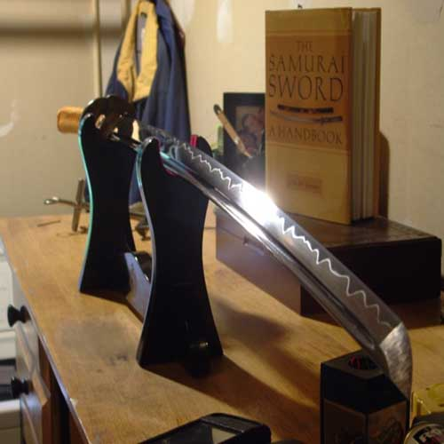
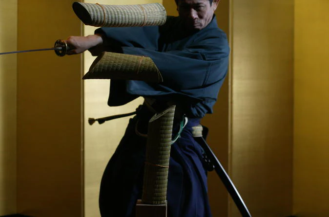
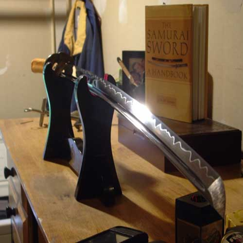
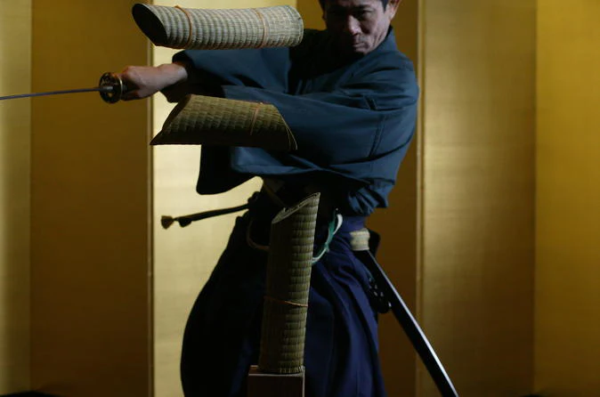

Преимущества покупки Катаны
- Исключительно мастерская ковка
- Богатая культурная история
- Уникальная эстетическая привлекательность
- Отлично подходит для коллекционеров и мастеров боевых искусств.

Катана против обычных покупок
Что принесёт больше пользы и радости?
| Покупка | Сколько живёт интерес | Польза |
|---|---|---|
| Смартфон / игра | 3–6 месяцев | Временное развлечение |
| Катана | Лет 100 не менее | Украшение, история, развитие вкуса |
Почему Катана — это круто?
🌍 Частичка Японии дома
Ты буквально приносишь домой кусочек древней культуры и мастерства. Настоящая катана — это дух самурая у тебя в комнате.
🎨 Искусство и стиль
Катана — это произведение искусства. Каждый клинок и каждый узор хамона неповторимы, как отпечаток пальца.
🧘 Спокойствие и фокус
Катана — символ внутреннего баланса. Она помогает сохранять сосредоточенность, уважать труд и внимание к деталям.
🗡️ Это навсегда
Это не сломается, не устареет, не выйдет из моды. Катана будет служить десятилетиями и останется в семье.
Галерея
 



Наблюдайте за мастерством
Типы катан

Ручная ковка катан
Исключительное мастерство и баланс.
Антикварная катана
Богатая культурная история и уникальный дизайн.
Катана для Иайдо
Идеально подходит для коллекционеров и мастеров боевых искусств.
Interesting Facts
в эпоху Мэйдзи (1868–1912) некоторые самураи хранили свои катаны… в бетонных столбах и стенах домов! Когда правительство запретило носить мечи (закон "Хайто Рей", 1876 год), самураи, не желая расставаться с оружием, начали закапывать мечи в землю, прятать в деревянных балках и… замуровывать в стены! В некоторых старых японских домах, особенно в Киото и Эдо (современный Токио), при реставрациях находят катаны, спрятанные внутри бетонных и каменных конструкций. Это были не просто мечи — а семейные реликвии, передаваемые из поколения в поколение. Некоторые из них до сих пор в отличном состоянии, потому что качественная японская сталь и правильное хранение в сухом месте спасали их от коррозии. Так что если когда-нибудь будешь гулять по старым японским улочкам и увидишь древнюю стену — кто знает, может быть, там внутри спрятана настоящая самурайская катана! 😳